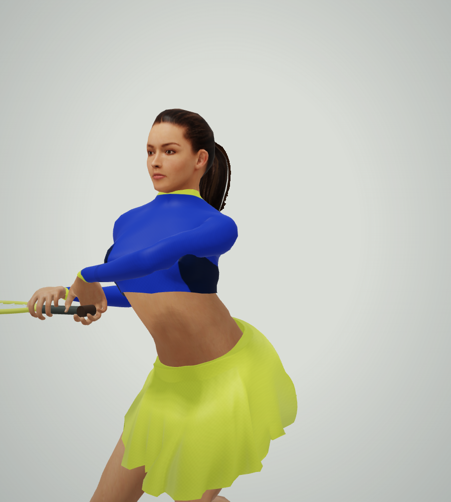
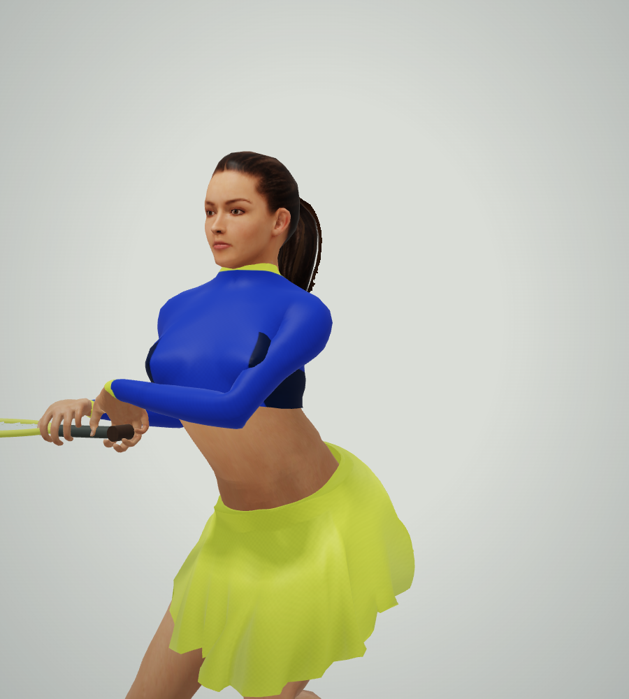

Low-stroke shoulder clearance
A clear elbow bend, a rounder shoulder and a steadier forearm. Same pose and camera, rendered by the running game.

Before
CurrentCompare motion
BeforeCurrent
Native rig reproductions. Real rally, actual recorded review and phone capture were verified separately.